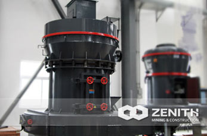

MTM Series Trapezium Mill
MTM Series medium speed trapezium mill, is the Zenith in order to adapt to the ever-changing needs of customers and the increasingly fierce market competition, the organization's most outstanding technical experts and relevant engineering elite through unremitting efforts, through elaborate design, experiment and debugging unceasingly developed with completely independent intellectual property rights and achieve the world first-class level of newest trapezoidal milling equipment at a moderate speed.The new medium speed trapezium mill can be used for particle size less than 35 mm of material processing, 3-22 t/h and efficient production capacity and can be adjusted freely between 30 yard to 450 yard of the finished product fineness, won the industry and customers consistent praise.
- product, low loss and high fineness.According to the relevant technical personnel, the medium-speed trapezoid mill by using new high-quality wear-resistant material, can be in the same case to extend the time of the use of more than one year, and the finished product one-time molding of D97 5 microns or less.
- low investment and high yield.By a large number of customer pays a return visit, MTM medium speed trapezium mill can largely save investor's investment cost, and the models of high efficiency and stable performance, let the customer in a very short period of time to recover the cost.
- safe, reliable and environmentally friendly.The flour milling equipment after authorities of safety monitoring and environmental monitoring, so as to effectively guarantee the safety and reliability in the production process and friendly to the environment.
- there are A variety of plate type for choice, B series energy than A standard series energy saving 10% 20%.
The process flow of MTM Series Medium Speed Trapezium Mill
MTM medium speed trapezium mill in most cases are not alone, but as a link in the whole process.Generally in the front need to equipped with jaw crusher, counterattack crusher (or hydraulic cone crusher), feeder, etc for crushing, plastic material.After reach a certain size before entering the MTM medium speed trapezium mill in flour, the flour link also can add corresponding dust removal equipment to protect the environment.According to the need can be added at the end of the process of super fine grinder or micro powder grinding, superfine powder and powder processing.